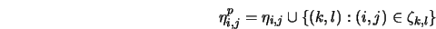
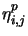
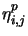
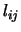
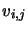
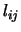
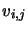
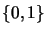
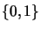

It is well known that in case of images important information is conveyed at points where there is a significant change in the image irradiance. Such changes correspond to changes in the surface property; these could be due to changes in depth, texture, surface orientation, source orientation, changes due to motion, or some other surface attribute. Thus it is important to incorporate a component to account for the presence or absence of discontinuities.
Geman and Geman [79] introduced the concept of line
field
located on the dual lattice to detect discontinuities.
This dual lattice has two sites, each corresponding to the vertical
and horizontal line fields. The horizontal line field 
connects site  to
to  ; this
will aid in detecting a horizontal edge. Similarly, vertical
line field  connects site to
; this
will aid in detecting a horizontal edge. Similarly, vertical
line field  connects site to  and this will
help in detecting a vertical edge.
Note that  and are
 variables, and the corresponding
line fields,
and this will
help in detecting a vertical edge.
Note that  and are
 variables, and the corresponding
line fields,  and , are binary.
and , are binary.
Now, within the Bayesian framework,
we can define a Gibbs (MRF) prior distribution
that combines the image  , the horizontal line field
, the horizontal line field  and the vertical line field ;
and the vertical line field ;
As seen, the solution of any vision task formulated in a MRF framework reduces in computing the MAP estimate of the attribute of interest. This is equivalent to minimizing the posteriori energy function (2.13). The posteriori energy function is generally non-convex in nature.